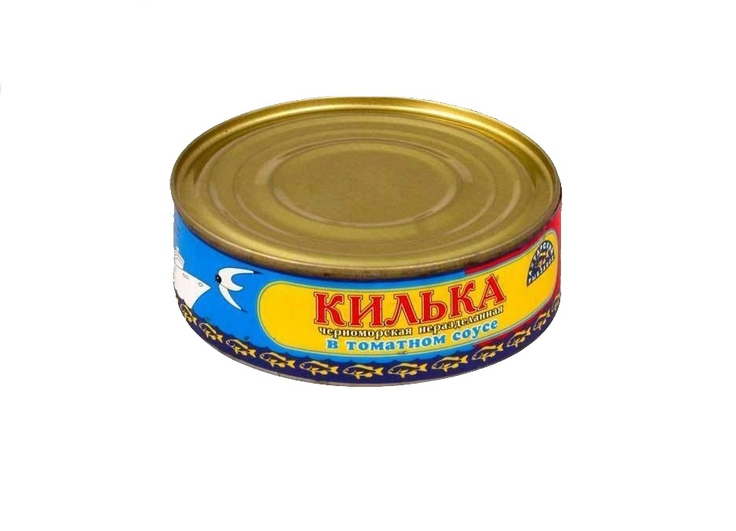

Консерва "КИЛЬКА В ТОМАТНОМ СОУСЕ"
- ГОСТ 16978-99 Консервы рыбные в томатном соусе. Технические условия
- Состав: Рыба килька, томатная паста, соль, сахар, перец, кориандр, мускатный орех, гвоздика, кардамон, лук и мука.
- Цена: 29 руб.
Энергетический состав продукта
| Белки |
Жиры |
Углеводы |
Калорийность в 100 гр. |
| 2.22 |
5.55 |
1.88 |
128 Кл |